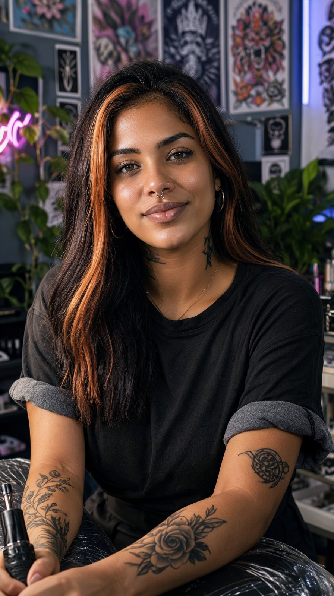

Duas histórias novas, nada a ver entre si — 30 segundos contínuos cada, na arquitetura de cadeia latente da v25, agora com o LoRA "Natural Face and Speech" (fala com boca sempre em movimento), Realism Slider, roteiro que preenche o take inteiro e QA por take com re-roll automático: o whisper confere as palavras-chave de cada fala antes de aprovar o take.
Entregáveis · 30,0s cada · 576×1024

Correções da v25 → v26
Boca parada com áudio (v25, 16-19s): a linha do take terminava antes do vídeo e o
modelo "murmurava" de boca fechada. Agora o roteiro preenche ~95% de cada take, o prompt
exige "mouth moving naturally with every word" e o LoRA nafasp
(Natural Face & Speech — "flawless speech sync") entra em todos os takes.
"Cinkenta cinkenta": trava-línguas com número repetido banido do roteiro; e cada take passa pelo whisper antes de ser aceito — se a transcrição não contém as palavras-chave, o take é re-renderizado com outra seed (até 3 tentativas).
Stack de modelos: ref2va int8 + turbo 4-step + nafasp 0.8 + Realism Slider 1.0 — 5,0min/take na 3070 8GB, sem OOM. QA final reconfere: diferença entre frames (sem picos de corte), consistência de cena (mesmo fundo do início ao fim) e diálogo transcrito por inteiro.